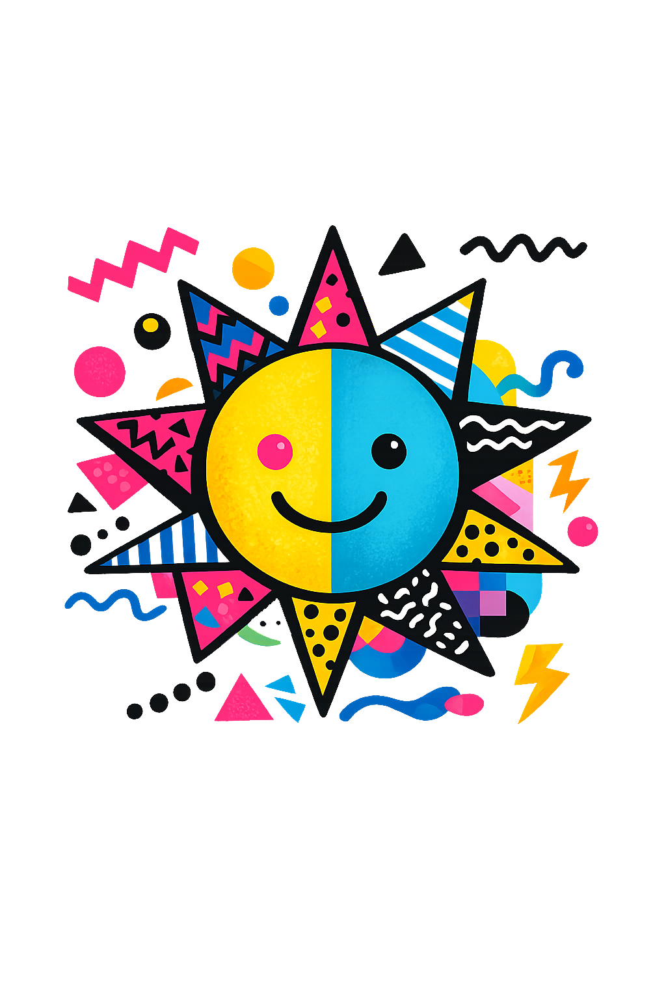

Lewis Fader's Résumé
Education
B.A. | Communication Studies | UNC Greensboro
Work Experience
Content Manager, Online Business Banking
BMO Financial, Toronto — February 2025 – Present
- Creating and optimizing email templates using HTML/CSS to ensure responsive design and consistent brand experience across devices; converting designs into responsive, cross-browser HTML, CSS, and JavaScript.
- Created, managed and migrated content to Contentful, ensuring accuracy and alignment with communication objectives.
- Maintaining and updating websites using Content Management System (CMS) in a timely manner using images, copy, and translations provided by the Digital Content Team.
- Conducting regular content audits to evaluate effectiveness and relevance of existing materials.
- Performing content gap analyses to determine missing or underrepresented topics and recommend improvements.
- Participating in code reviews, testing, and debugging and providing support to content authors by addressing and resolving reported issues.
- Consistently monitoring, analyzing, optimizing and maintaining site health (quality assurance, accessibility, and SEO) across OLBB web pages.
- Maintaining email compliance regulations in Canada & the U.S and remaining current with email marketing industry updates and emerging technologies.
- Ensuring identical and consistent rendering across email service providers, devices, and browsers.
Web Communications Project Manager
Ministry of Long-term Care (MLTC), Toronto November 2021 – February 2025
- Applied internet/intranet standards and international web accessibility standards, including AODA and WCAG 2.0, through extensive knowledge of HTML5 coding and current front-end technologies.
- Designed, coded, and maintained responsive front-end pages using HTML, CSS, and JavaScript.
- Applied Svelte framework projects to build dashboards, custom widgets, and components.
- Managed the process of social media communications from content creation, approval, programming, and reporting.
- Created wireframes, prototypes, and user flows to guide UX decision-making.
- Managed the department’s social media calendar, leveraging current events and trends to meet ongoing content requirements across MLTC’s digital channels.
- Worked closely with the Commissioner’s Office (CO Digital) to oversee day-to-day management, maintenance, and content updates for Ministry websites.
- Developed social media strategies and targeted advertising campaigns to meet business objectives and stakeholder needs.
- Monitored social media listening tools and responded to customer inquiries, coordinating with Customer Service to resolve issues quickly.
Senior Marketing & Communications Specialist
Sun Life, Toronto — August 2020 – August 2021
- Managed projects, defined scope requirements, and delivered scalable, distributed front-end experiences using Adobe Experience Manager.
- Translated business strategy into digital experience through of mix of personalization and A/B testing.
- Created and presented user personas, user experience scenarios, and test cases, and assisted with the maintenance and development of content libraries.
- Collaborated with the various internal teams to create initiatives designed to meet customer retention and acquisition metrics.
- Analyzing content performance data to identify trends, insights, and emerging client needs.
- Designed customer journeys with cross-functional partners to promote strategic products, brands, and initiatives.
- Teamed with Senior Manager and Digital Managers to ensure that all initiatives and projects are aligned to digital strategy.
- Maintained and improved existing codebases and addressed technical gaps using automation like PowerShell scripts, VBA and Power Query.
- Worked closely with the backend team to integrate front-end components with APIs and services and collaborated with backends team to ensure smooth data flow and seamless integration between front-end and back-end systems.
- Part of an Agile team which used a React Testing to ensure a seamless and engaging experience for both B2B and B2C audiences.
- Managed and handled complex, confidential information in both English and French across secure sites.
- Created wireframes, mockups, and prototypes to communicate design ideas and align with stakeholder expectations.
- Collaborated with internal and external partners to collect and analyze data, supporting web property development.
- Employed web analytics (Adobe Analytics) to monitor site traffic and usage, using insights to optimize content and user engagement.
- Applied accessibility standards, including WCAG guidelines, using assistive technology to enhance user experience.
Web Content Manager & Copy Editor
China International Publishing Group, Toronto — 2016 – 2020
- Designed, developed, and launched landing and promotional pages for new and existing products.
- Built A/B tests and personalized experiences, in partnership with digital analytics, marketing, UX, content writers, and audience managers, aimed to enhance overall customer experience, improve relevancy, and increase digital sales.
- Uploaded all content and images for E-Commerce website and all Digital Applications.
- Delivered recommendations to optimize web content for search, accessibility and user experience.
- Organized and prioritized assets and ensuring timely and accurate publication of all content.
- Reviewed all-new online content to ensure information is accurate, complete, and current prior to upload.
Web Content Manager, Digital Marketing
Transn Translations & Beijing Magazine — 2011 – 2015
- Demonstrated ability to organize, prioritize, and engineer information from multiple disparate sources and across numerous teams, and functioned as a liaison between users and designers.
- Owned and optimized the website user journey to drive measurable improvements in conversion.
- Developed experimental features designed to improve customer experiences while showcasing the magazine in new and interesting ways.
- Designing effective taxonomies and developing clear process documentation, providing clients with resources for success.
- Maintained consistency with regional standards, using A/B testing to match audiences with appropriate content and maintaining pages using Sitecore.
- Applied extensive knowledge of components + development and testing, templates and use across environments, customized pages with HTML, CSS, using markup to host content both in English and Mandarin Chinese.
- Used Adobe Photoshop for cropping, resizing, and optimizing for digital channels, working with Media Team on photography and layout and display.
- Under tight deadlines and high-quality standards managed multiple projects simultaneously to meet publishing schedules and air dates.
- Localized software to manage mobile & web UI and ensure consistent content, scripting and branding.
Host, Canada Pavilion
Heritage Canada, Shanghai — 2010
- Provided on-the-ground support and coordination for key brand events and initiatives as required, including content creation, community management, and related activities.
- Educated visitors on Canada Pavilion content information by explaining the founding principles behind each public presentation.
- Collaborated with other team members to perform crowd control of daily crowds exceeding 40k visitors at the presentation area.
- Promoting Canadian city life to visitors from around the world.
- Interacted with global citizens using English, Mandarin Chinese.
Skills
|
Content Management Systems (AEM 6.2–6.5, Joomla, WEM, Sitecore, Drupal), WalkMe, 24.7 Kasisto |
|
HTML5, CSS, JavaScript (JSON & Spyder JS Framework), React, Vue |
|
Microsoft Office Suite |
|
Adobe Analytics & GA4 |
|
MS Access |
|
Sketch, Photoshop, InDesign, Acoustic, Dreamweaver & Adobe Suite |
|
jQuery, Axure Wireframes, Figma |
|
Jira & JQL, Confluence, Microsoft Teams, Slack, Wrike, SharePoint, GitHub, |
|
Agile, FTP Suites, |
|
Linux/Unix Terminal, Python & Python Libraries, SQL, VBA, PowerShell |
AODA (WCAG AA) & SEO Best Practices |
What is all this?
This project started as a chance to take advantage of in-line css and Javascript, making multiple uploads without needing a full React deployment.
I'm not doing that with this page and virtually all styling and dynamic behaviour is happening thanks to css and js files. To visit my original version (in the style of Global Village Coffee House, pleas go here.
To view my React app please visit my React GitHub project.
